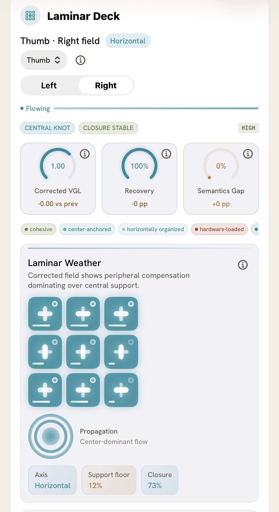
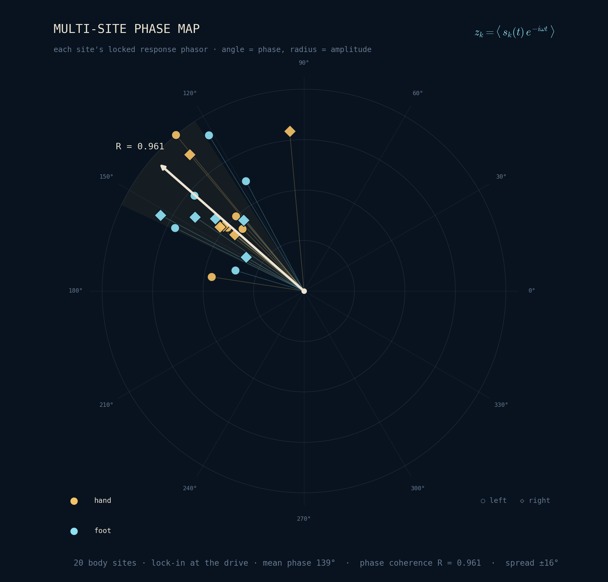
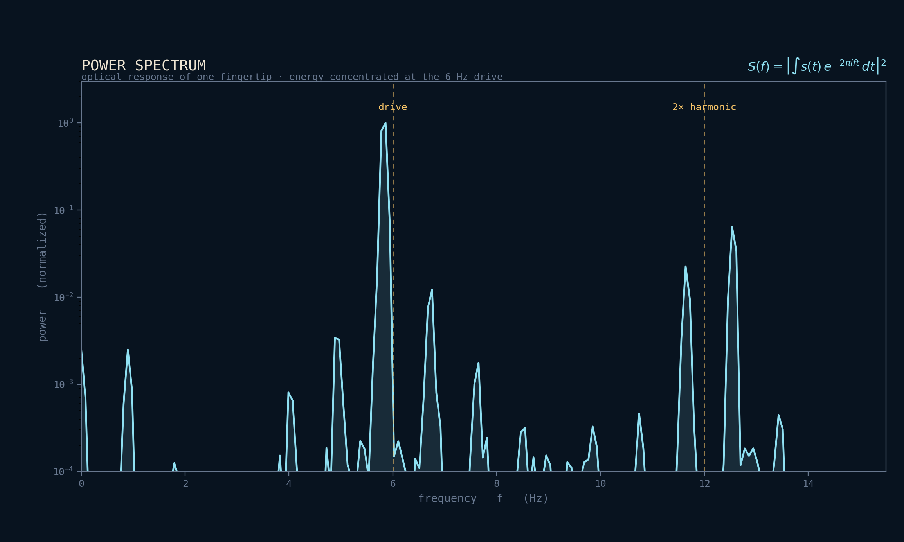

Products
Each product is the same formal object seen through a different instrument — from an Apple Watch to a clinical imaging array. Same mathematics, same sealed packet, a different depth of evidence.
Consumer · live
A daily read of your whole physiology from the Apple Watch you already wear — your body held against a formal definition of what it means to be well.
The rolling 28-day baseline is calibration, not the verdict — it tunes the reading to your body, not to a population average. That calibrated state is then held against the formal ontology of what it means to be healthy; in the free tier, it resolves to a single read each morning — Go, Caution, or Recover. Grounded in the same machine-checked science that runs across our platform. In closed beta now; worldwide on August 8, 2026.

Research instrument · in development
Quantum Phase-Coherence Imaging is our broadest instrument — a multimodal architecture that drives the body with a controlled, witnessed stimulus and images how distributed sites hold phase with one another, reconstructing calibrated field maps rather than isolated readings.
One eleven-layer architecture spans a hardware continuum: it already runs on an iPhone via DRTT — the torch as emitter, the camera as sensor — and reaches full form in a hospital-grade array that fuses quantum-defect magnetometry, whole-body bioimpedance, EEG, and optical-metabolic channels on one shared clock. Every capture seals into a witnessed research packet. Patent-pending, and like everything we build — measurement, not diagnosis.

Professional & research · pilots
Tools for clinicians, coaches, and researchers to read the same signals your clients and subjects live in — consent-driven, time-bounded, and private by design.
Every capture is a sealed, witness-qualified packet with full provenance, so a reading is comparable and replayable across sessions and instruments. We're running early pilots now.

The product line
The same modality at three stages of readiness — shipping today, in prototype, and in development. For the architecture behind them, see the platform.
01 · DRTT
Live now, powering Membrane Health — no accessory, nothing to buy beyond the phone in your hand.
Shipping02 · Rev B BWI
For clinics and labs that need a directly witnessed source, closed to real physical units. In prototype now.
Prototype · late 202603 · QPCI
The full multimodal array, for clinical and research partners. Patent-pending; in development.
In development